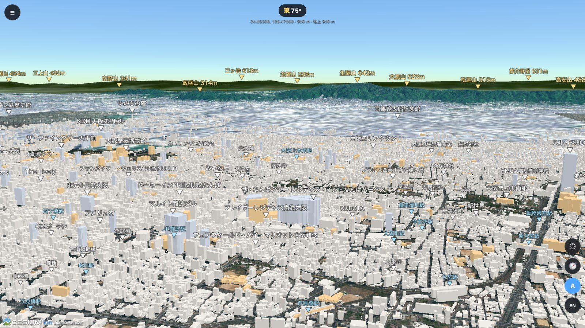
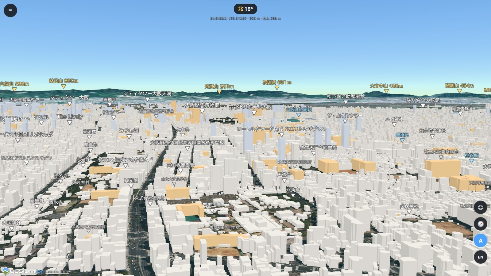
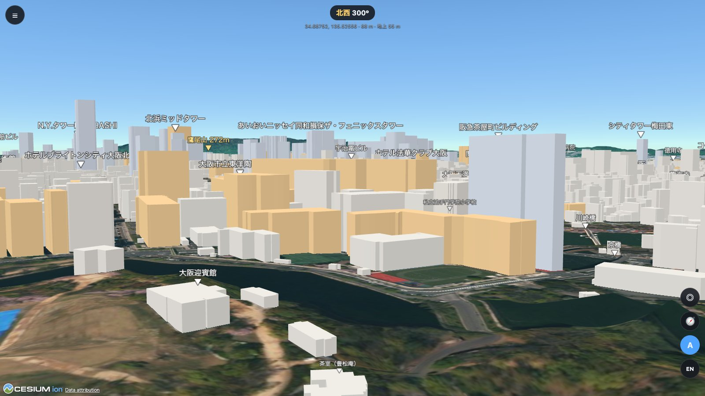
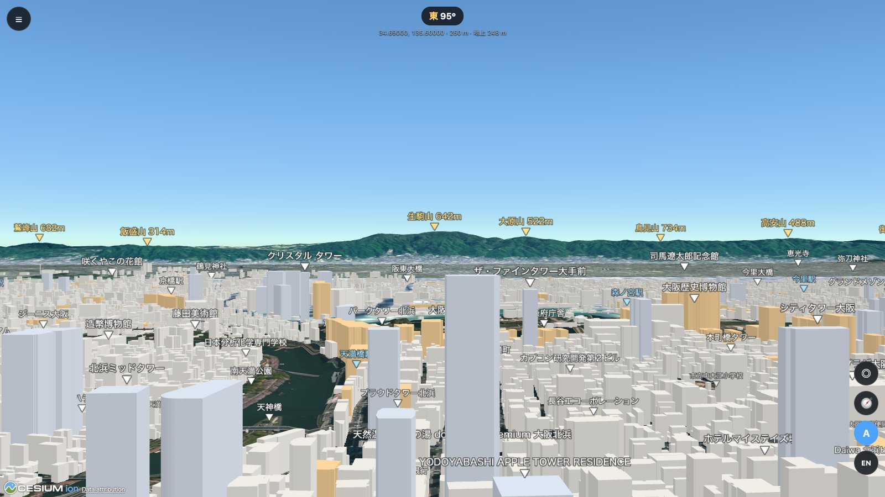
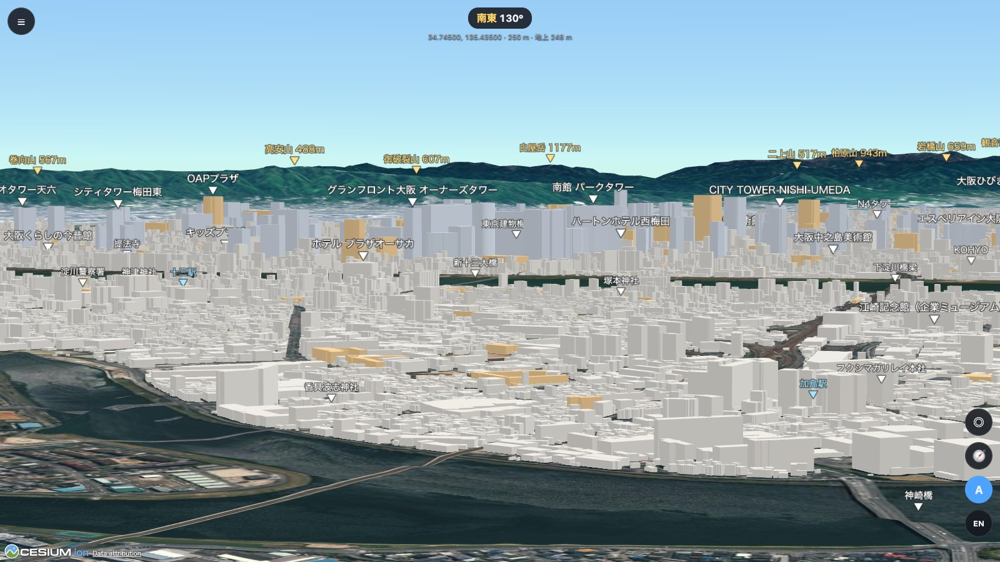
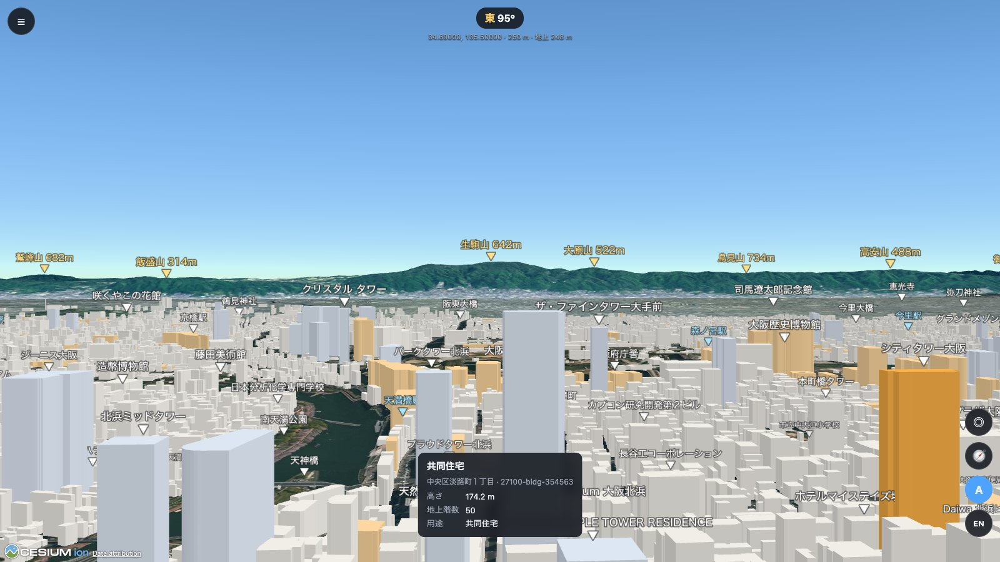

窓から見える、
あのビルの名前がわかる。
大阪の地形と約61万棟の建物を、3Dでまるごと再現。自宅のベランダ、大阪城天守閣、あべのハルカスの屋上など、好きな場所と高さから景色を眺めて、見えているビルや山の名前を確かめられます。

「ベランダから見えるあのビル、何だろう？」
地図アプリを開いても、答えは出てこない。
地図アプリは真上から見た地図です。でも知りたいのは、目の前の景色のどれが何か、ということ。
OSAKA VIEWER 3D は、立つ場所と目の高さを決めると、その位置から見える景色を3Dで描きます。見えている建物と山には名前のラベルが付き、▼ の先がその場所を指します。
大阪の名所から、眺めてみる。
立つ場所の緯度・経度と高さを決めて、見回すだけ。行ったことのない展望台からの景色も、その場で確かめられます。

あべのハルカス屋上からの景色
日本有数の高さから、大阪城方面を見渡せます。四天王寺、上本町のタワー、遠くの山並みまで名前がわかります。

大阪城天守閣からの景色
堀と迎賓館の向こうに、北浜から天満のビル群が広がります。

東の山並みを見る
生駒山 642m、鳥見山 734m。山の名前と標高も表示され、地形に隠れる山はラベルが自動で消えます。

市の外から、梅田のビル群を望む
神崎川を境に大阪市の街並みが始まり、その奥にグランフロント大阪やシティタワー西梅田がそびえます。望遠ズームで、7km 先の高層ビルも名前まで確かめられます。
しくみと機能
国土交通省の 3D 都市モデル「PLATEAU」と国土地理院のデータを使い、大阪を実際の形で再現しています。
棟の建物
PLATEAU の大阪市データの建物を、すべて立体で表示します。
目の高さを指定
「地面から」か「海抜」で、視点の高さを入力できます。家の2階なら 4.5m、展望台なら公表されている高さを入れます。
名前のラベル
山・ランドマーク・駅・施設に名前を表示します。▼ の先がその場所です。種類ごとに表示を切り替えられます。
クリックで移動
地図上のビルの屋上をクリックすると、その屋上に立った視点に切り替わります。
望遠ズーム
立ち位置を変えずに、遠くのビルや山を約66倍まで拡大できます。
日本語と英語
ラベルと画面の表示を、ワンクリックで切り替えられます。

気になるビルは、クリックで調べる。
- 名前・用途：PLATEAU に登録されている名前と用途
- 高さ・地上階数：たとえば 174.2m・50階
- 所在地：区と町名まで
使い方は3ステップ
自宅のベランダからの景色を見る場合の例です。
場所を選ぶ
「地点をクリック」で自宅の建物を選ぶか、緯度・経度を入力します。
高さを決める
基準を「地面から」にして、階数 × 約3m ＋ 1.6m（目の高さ）を入力します。10階なら 31.6m です。
見回す
ドラッグで向きを変え、ホイールで拡大します。ラベルを見れば、どのビルか一目でわかります。